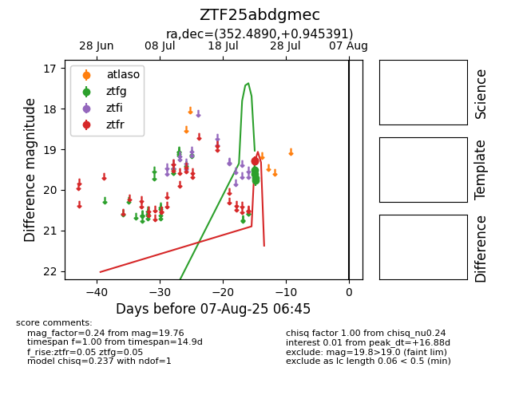

Target ZTF25abdgmec at 2025-08-07 07:30, see:
FINK: fink-portal.org/ZTF25abdgmec
Lasair: lasair-ztf.lsst.ac.uk/objects/ZTF25abdgmec
ALeRCE: alerce.online/object/ZTF25abdgmec
alt names
ZTF25abdgmec (ztf,fink)
coordinates:
equatorial (ra, dec) = (352.4890,+0.94539)
galactic (l, b) = (84.7200,-55.76045)
photometry
last ztfg=19.76, ztfr=19.29
4 ztfg, 2 ztfr detections
